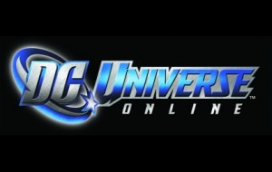

HOME
DESCRIZIONE GIOCO
POTERI E ABILITA
MENTORE
DC UNIVERSE ONLINE

DESCRIZIONE GIOCO
DC Universe Online (noto anche con l'acronimo DCUO) è un videogioco online Free-to-play per Microsoft Windows e PlayStation 3 e playstation 4, ambientato nell'Universo DC. Il gioco è stato pubblicato il 14 gennaio 2011 in Europa.[1] Dopo una furente battaglia tra Batman, Superman, Wonder Woman, Cyborg, Lanterna Verde e Flash contro Lex Luthor, Deathstroke, Sinestro e Joker, Brainiac distrugge il genere umano tramite i suoi Exobytes, dopo che questi piccoli dispositivi hanno rubato tutti i superpoteri di eroi e villains. Luthor torna nel passato per avvertire Batman, Superman e Wonder Woman del piano di Brainiac. Libera sulla terra degli Exobytes sottratti a Brainiac, che danno agli umani dei superpoteri, in modo che gli umani possano salvare la Terra. Braniac attacca la Terra e trova una forte resistenza da parte del genere umano, ma tenta comunque di distruggere gli umani.
SVILUPPO
Sviluppato dagli studi di Austin di Sony Online Entertainment, nel progetto sono stati coinvolti il disegnatore Jim Lee come direttore esecutivo, e alla storia hanno collaborato i noti autori di fumetti Geoff Johns e Marv Wolfman. Altri realizzatori sono Carlos D'Anda, JJ Kirby, Oliver Nome, Eddie Nunez, Livio Ramondelli e Michael Lopez, oltre a Chris Cao e Shawn Lord, già sviluppatori di EverQuest[4]. Il primo concept art del gioco è stato reso noto il 4 luglio 2008, seguito dieci giorni dopo dal primo trailer, da altri screenshot e da alcune informazioni date dagli sviluppatori come risposta alle questioni proposte dagli stessi giocatori. Altre informazioni sono state rivelate durante il Comic-Con International, insieme ad un Making of del gioco. All'E3 2010 è stato reso noto il gamplay con la possibilità di visualizzare tutti i poteri disponibili per gli eroi creati. È stato reso noto anche il nuovo trailer. Per gli Stati Uniti è anche stato presentato il prezzo dell'abbonamento che si aggira intorno ai 14,99$. Il 9 dicembre 2010 è stato comunicato che gli utenti PlayStation plus USA potranno provare la beta in anteprima. Il 21 dicembre sono stati comunicati i prezzi dell'abbonamento che vanno da 12,99€ al mese oppure a un vitalizio solo per PC dal costo di 180€. Dal 1º novembre 2011 il gioco è diventato Free to Play.